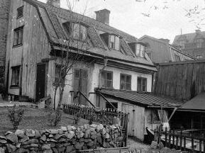
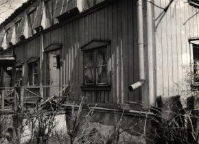
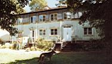
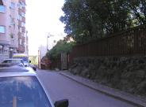
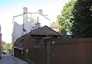
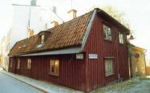
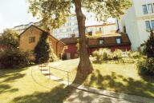
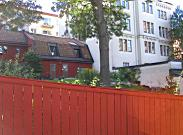
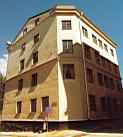

Södermalm i tid och rum. Stockholm
 Bastugatan 32. |
 Bastugatan 32. 1923 |
  Bastugatan 32. Tomten uppläts 1726 och bebyggdes enligt en bevarad ritning 1733. Vindsvåningen senare, men före 1823. |
  Bastugatan 30-34 till höger. Nr 31 tillvänster Bastugatan 30-34 till höger. Nr 31 tillvänster |
  Bastugatan 32-36. Lilla Skinnarviksgränd Bastugatan 32-36. Lilla Skinnarviksgrändmellan 32 och 34 till höger. |
  Bastugatan 34. Timmerhuset vid Bastugatan byggdes troligen omkring 1700. Stenhuset vid gränden uppfördes någon gång före 1751. Bastugatan 34. Timmerhuset vid Bastugatan byggdes troligen omkring 1700. Stenhuset vid gränden uppfördes någon gång före 1751. |
  Bastugatan 34 från gårdssidan, Lilla Skinnarviksgränd.
Bastugatan 34 från gårdssidan, Lilla Skinnarviksgränd.
|
  Bastugatan 34-36 från Lilla Skinnarviksgränd. Bastugatan 34-36 från Lilla Skinnarviksgränd. |
  Bastugatan 36, hörnet Timmermansgatan/Bastugatan från väster. Byggnaden uppfördes 1863 för apotekaren J Ahlström. Husets norra fasad är rikt utformad med ett framskjutande mittparti som har en tornliknande avslutning. Bastugatan 36, hörnet Timmermansgatan/Bastugatan från väster. Byggnaden uppfördes 1863 för apotekaren J Ahlström. Husets norra fasad är rikt utformad med ett framskjutande mittparti som har en tornliknande avslutning.
|